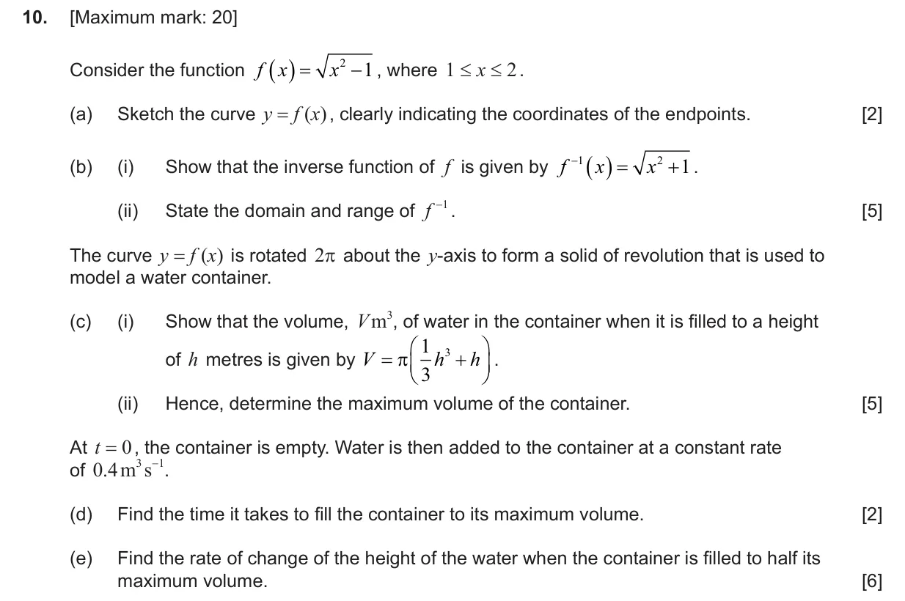
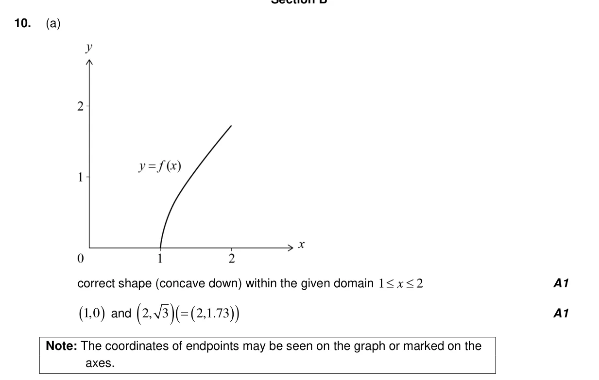
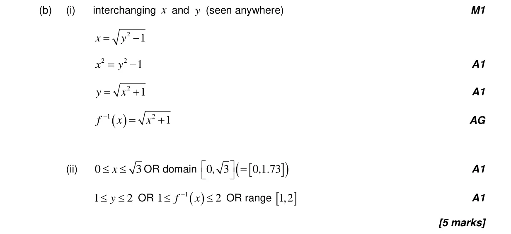
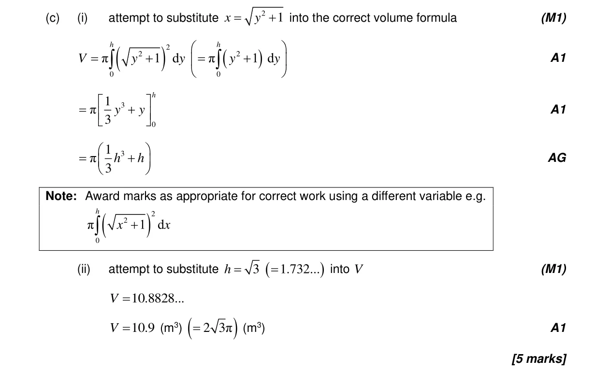
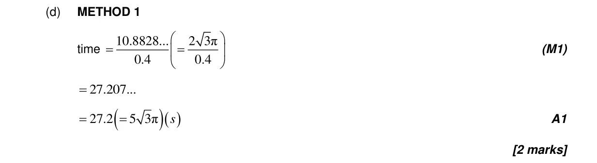
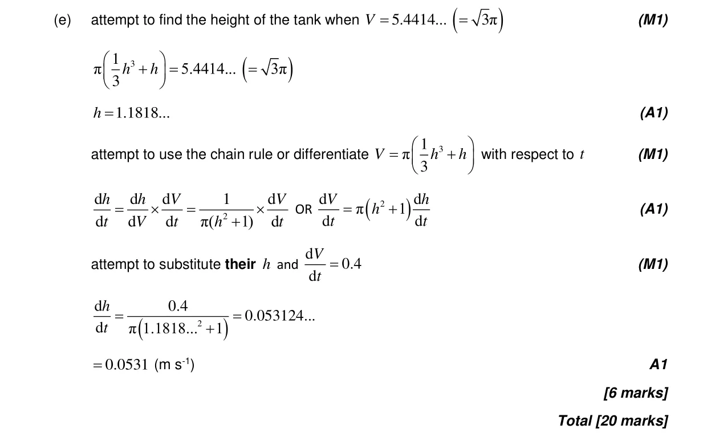

20 marks P2 TZ1 Section B Calculator 2.5 Composite functions, identity and finding inverse5.17 Areas against the y-axis and volumes of revolution5.14 Implicit differentiation, related rates of change and optimisation2.10 Solving equations graphically and analytically2.3 Graphs of functions5.1 Introduction to calculus Question Hide breakdown abcde Markscheme 